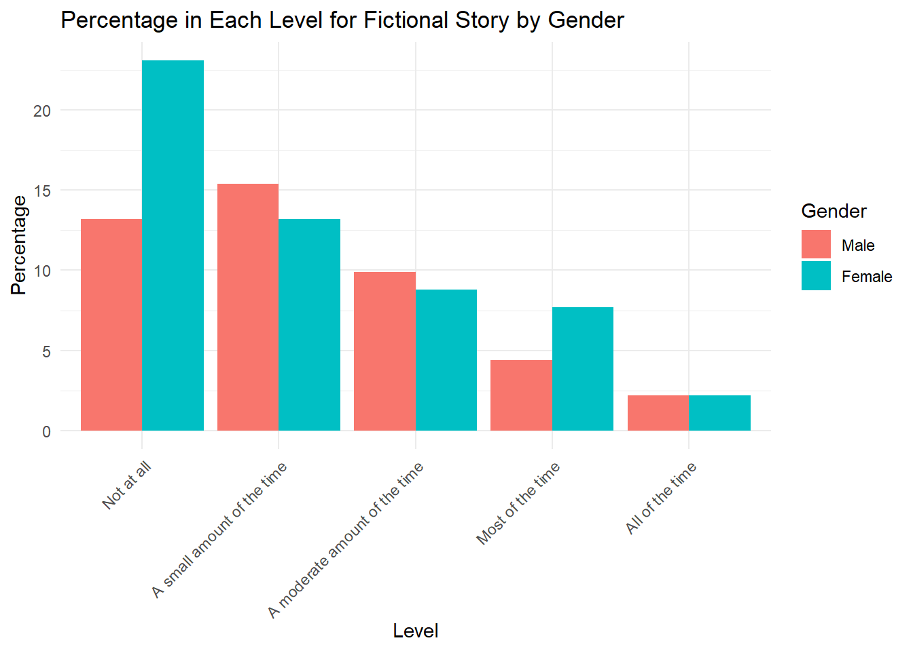
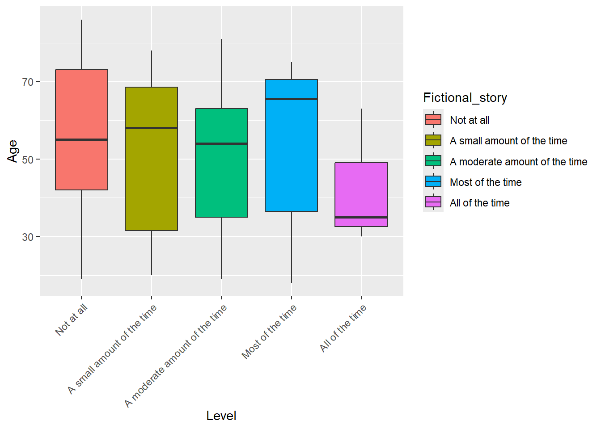
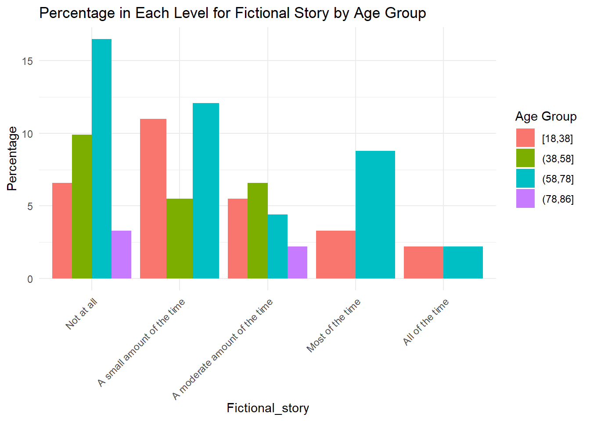
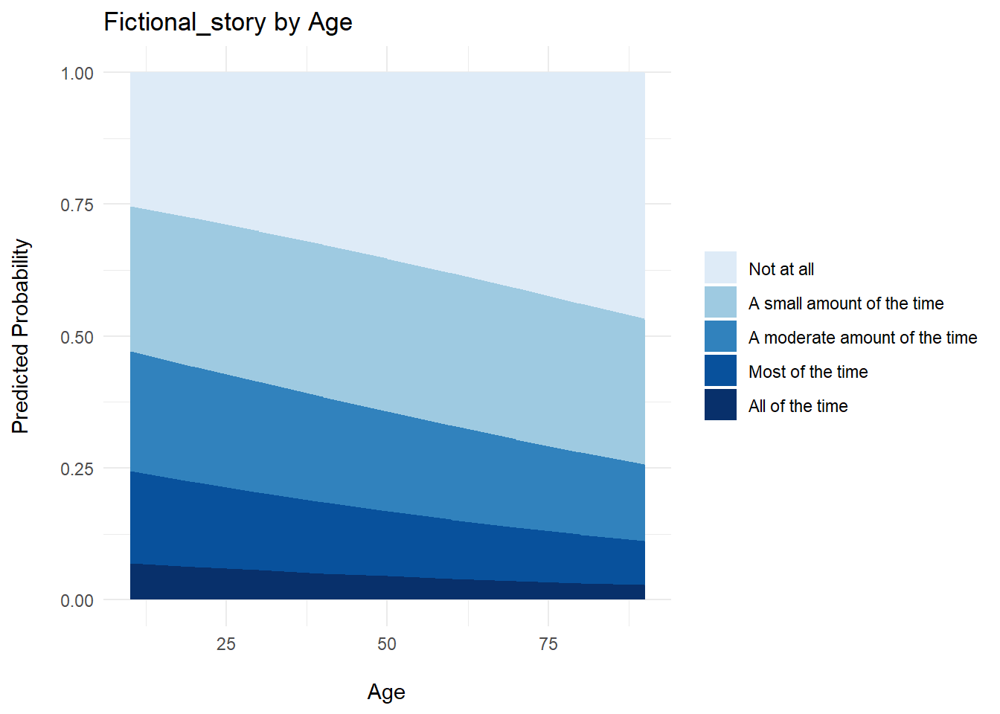

library(tidyverse)
library(broom)
library(performance)
library(ordinal)
library(car)
library(ggeffects)
library(gofcat)
library(brms)
library(emmeans)
library(knitr)
library(MASS)In this section, we’ll discuss how to model some of our data using ordinal regression. This will examine the relationship between demographic data and thought types.
Let’s reload our data from each half of the concert:
data1 <- read_csv("https://raw.githubusercontent.com/hw3446/Final_Project_PUC/main/posts/Dataset_overview/working_data/data.csv")
data2 <- read_csv("https://raw.githubusercontent.com/hw3446/Final_Project_PUC/main/posts/Dataset_overview/working_data/data2.csv")Before constructing models, we’ll make sure all of our demographic and outcome variables are classed in the right way.
outcome_vars <- c("Fictional_story", "Abstract_shapes", "Sensory_sensations",
"Life_experiences", "Media", "Music", "Future_plans",
"Building", "Everyday")
# Converting outcome variables to factors with consistent levels for each thought type
data1[outcome_vars] <- lapply(data1[outcome_vars], factor,
levels = c("Not at all", "A small amount of the time",
"A moderate amount of the time", "Most of the time",
"All of the time"))
data2[outcome_vars] <- lapply(data2[outcome_vars], factor,
levels = c("Not at all", "A small amount of the time",
"A moderate amount of the time", "Most of the time",
"All of the time"))
#Just remaking the floor variable
data1 <- data1 %>%
mutate(Floor = ifelse(Location %in% c("A", "B", "C", "D", "E", "F"), "Downstairs", "Upstairs")) %>% relocate(Floor, .after = Location)
data2 <- data2 %>%
mutate(Floor = ifelse(Location %in% c("A", "B", "C", "D", "E", "F"), "Downstairs", "Upstairs")) %>% relocate(Floor, .after = Location)
#Making sure demographic variables are classed in the right way.
data1$Age <- as.numeric(data1$Age)
data2$Age <- as.numeric(data2$Age)
data1$Practice <- as.numeric(as.character(data1$Practice))
data2$Practice <- as.numeric(as.character(data2$Practice))
data1$Gender <- factor(data1$Gender, levels = c('Male', 'Female', 'Other'))
data2$Gender <- factor(data2$Gender, levels = c('Male', 'Female', 'Other'))
data1$Music_listening <- factor(data1$Music_listening, levels = c('Very rarely', 'Somewhat rarely', 'Moderately frequently', 'Frequently', 'Very frequently'))
data2$Music_listening <- factor(data2$Music_listening, levels = c('Very rarely', 'Somewhat rarely', 'Moderately frequently', 'Frequently', 'Very frequently'))
data1$Floor <- factor(data1$Floor, levels = c('Downstairs', 'Upstairs'))
data2$Floor <- factor(data2$Floor, levels = c('Downstairs', 'Upstairs'))Let’s start with a simple model that considers the relationship between a demographic and the likelihood of imagining a fictional story based on a particular demographic variable.
Here’s a plot showing the percentage of participants in each ordinal level for fictional story, by gender and age. We’re inoring N/As for now:
data1 <- data1 %>%
filter(!is.na(Age) & !is.na(Gender) & !is.na(Fictional_story)) %>% filter(Gender != 'Other')
fiction_gender <- data1 %>%
group_by(Fictional_story, Gender) %>% summarise(Count = n(), .groups = 'drop') %>%
mutate('Percentage' = Count / sum(Count) * 100)
ggplot(fiction_gender, aes(x = Fictional_story, y = Percentage, fill = Gender)) +
geom_bar(stat = "identity", position = "dodge") +
labs(x = "Level", y = "Percentage", fill = "Gender") +
ggtitle("Percentage in Each Level for Fictional Story by Gender") +
theme_minimal() + theme(axis.text.x = element_text(angle = 45, hjust = 1))
fiction_age <- data1 %>%
group_by(Fictional_story, Age) %>% summarise(Count = n(), .groups = 'drop') %>%
mutate('Percentage' = Count / sum(Count) * 100)
fiction_age %>%
ggplot(aes(x = Fictional_story, y = Age, fill = Fictional_story)) +
geom_boxplot() +
xlab("Level") + theme(axis.text.x = element_text(angle = 45, hjust = 1))
Here’s an alternative visualisation with age as a gouped variable:
max_age <- max(data1$Age, na.rm = TRUE)
min_age <- min(data1$Age, na.rm = TRUE)
breaks <- c(seq(min_age, max_age - 1, by = 20), max_age)
data1 <- data1 %>%
mutate(Age_grouped = cut(Age,
breaks = breaks,
include.lowest = TRUE,
right = TRUE))
data1$Age_grouped <- as.factor(data1$Age_grouped)
fiction_age_grouped <- data1 %>%
group_by(Fictional_story, Age_grouped) %>% summarise(Count = n(), .groups = 'drop') %>%
mutate('Percentage' = Count / sum(Count) * 100)
ggplot(fiction_age_grouped, aes(x = Fictional_story, y = Percentage, fill = Age_grouped)) +
geom_bar(stat = "identity", position = "dodge") +
labs(x = "Fictional_story", y = "Percentage", fill = "Age Group") +
ggtitle("Percentage in Each Level for Fictional Story by Age Group") +
theme_minimal() + theme(axis.text.x = element_text(angle = 45, hjust = 1))
To create an ordinal regression model, we use the clm() function. Here’s a simple example showing the relationship between age and likelihood of imagining a fictional story based on data from the first half of the concert.
model_fiction_age <- clm(Fictional_story ~ Age, data = data1, Hess = TRUE)
model_fiction_age %>%
tidy() %>%
kable()| term | estimate | std.error | statistic | p.value | coef.type |
|---|---|---|---|---|---|
| Not at all|A small amount of the time | -1.2000202 | 0.5581174 | -2.1501215 | 0.0315456 | intercept |
| A small amount of the time|A moderate amount of the time | -0.0056613 | 0.5409042 | -0.0104663 | 0.9916492 | intercept |
| A moderate amount of the time|Most of the time | 1.0067653 | 0.5656944 | 1.7796981 | 0.0751254 | intercept |
| Most of the time|All of the time | 2.4637137 | 0.7068055 | 3.4857024 | 0.0004908 | intercept |
| Age | -0.0118818 | 0.0095693 | -1.2416588 | 0.2143625 | location |
Based on the model outcome for the ‘Age’ term (estimate = -0.0119), we can see that as age increases, respondents are less likely to choose higher categories (e.g. less likely to report experiencing a fictional story frequently). However, p = 0.214, so this is not statistically significant.
ggemmeans can be used to visualise the model.
predictions <- ggemmeans(model_fiction_age, terms = "Age")
ggplot(predictions, aes(x = x, y = predicted, fill = response.level)) +
geom_area() +
labs(x = "\nAge",
y = "Predicted Probability\n",
title = "Fictional_story by Age") +
scale_fill_manual(
name = NULL,
values = c("#deebf7", "#9ecae1", "#3182bd", "#08519c", "#08306b"),
labels = c("Not at all",
"A small amount of the time",
"A moderate amount of the time",
"Most of the time",
"All of the time")
) +
theme_minimal()
It’s also good to run a brant test to tell us whether the proportional odds assumption holds in our current model. The assumption is that the relationship between predictor and output is the same across all levels of the ordinal outcomes.
brant.test(model_fiction_age)
Brant Test:
chi-sq df pr(>chi)
Omnibus 2.64 3 0.45
Age 2.64 3 0.45
H0: Proportional odds assumption holdsFrom the above, we can see that the proportional odds assumption does hold in our model.
MODEL COMPARISONS
Let’s do some comparing comparison now. Here we’re going to integrate age and gender into the same model.
Fiction_int = clm(Fictional_story ~ Gender*Age, data=data1)
tidy(Fiction_int) %>%
kable()| term | estimate | std.error | statistic | p.value | coef.type |
|---|---|---|---|---|---|
| Not at all|A small amount of the time | -0.9149422 | 0.8400896 | -1.0891007 | 0.2761095 | intercept |
| A small amount of the time|A moderate amount of the time | 0.3051990 | 0.8402217 | 0.3632362 | 0.7164284 | intercept |
| A moderate amount of the time|Most of the time | 1.3205635 | 0.8608620 | 1.5340014 | 0.1250293 | intercept |
| Most of the time|All of the time | 2.7692707 | 0.9543832 | 2.9016340 | 0.0037122 | intercept |
| GenderFemale | 0.5410978 | 1.0907027 | 0.4961002 | 0.6198237 | location |
| Age | -0.0033337 | 0.0145300 | -0.2294329 | 0.8185324 | location |
| GenderFemale:Age | -0.0161627 | 0.0194180 | -0.8323554 | 0.4052083 | location |
We can compare this against the model using just age.
model_int <- clm(Fictional_story ~ Gender*Age, data = data1)
model_no_int <- clm(Fictional_story ~ Age, data = data1)
anova(model_int, model_no_int) %>% kable()| no.par | AIC | logLik | LR.stat | df | Pr(>Chisq) | |
|---|---|---|---|---|---|---|
| model_no_int | 5 | 269.0693 | -129.5346 | NA | NA | NA |
| model_int | 7 | 271.7126 | -128.8563 | 1.356628 | 2 | 0.507472 |
Here the p value is still significantly above 0.05, so adding gender as an interaction variable doesn’t significantly improve the model.
The question is, how can we select the correct models with the optimum demographic inputs? This is what will be covered in the ‘Model Selection’ portion of this blog.